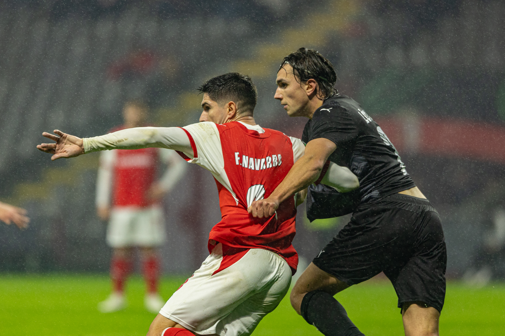
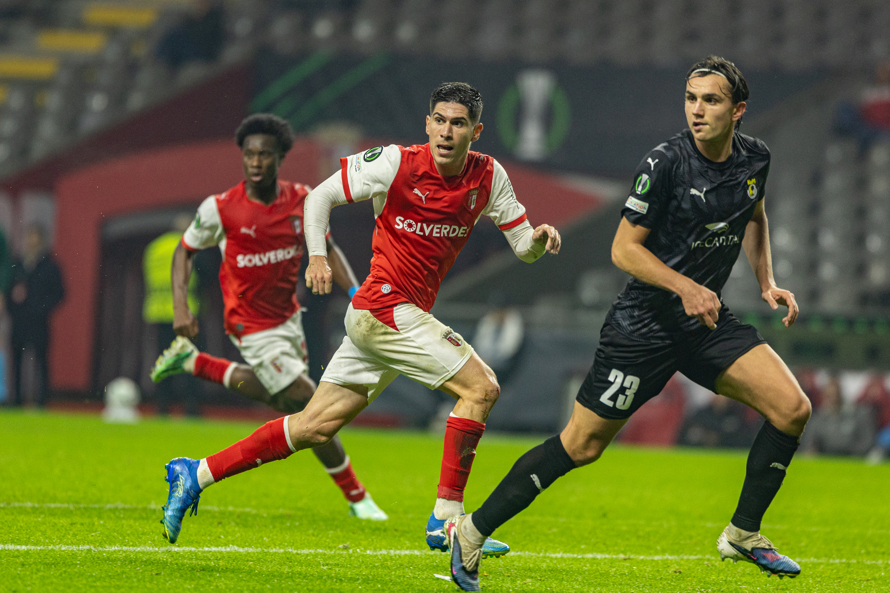

SC Braga beat Finland’s KuPS 4–0 at Estádio Municipal de Braga on Thursday, 26 November 2026, in the fourth round of the UEFA Conference League league phase. Pau Víctor scored the opener and supplied the assists for the other three goals.
Víctor put the hosts ahead in the 18th minute before setting up Fran Navarro for the second in the 31st. Braga went into half-time with a two-goal advantage.
Mario Dorgeles added the third in the 71st minute and Jovan Milošević completed the scoring in the 82nd, both from Víctor assists. The clean-sheet win gave Braga a second victory in this season’s league phase.


Image Media coverage
IM News Editorial Desk
Correspondent and photography: Paulo Nomade / Image Media